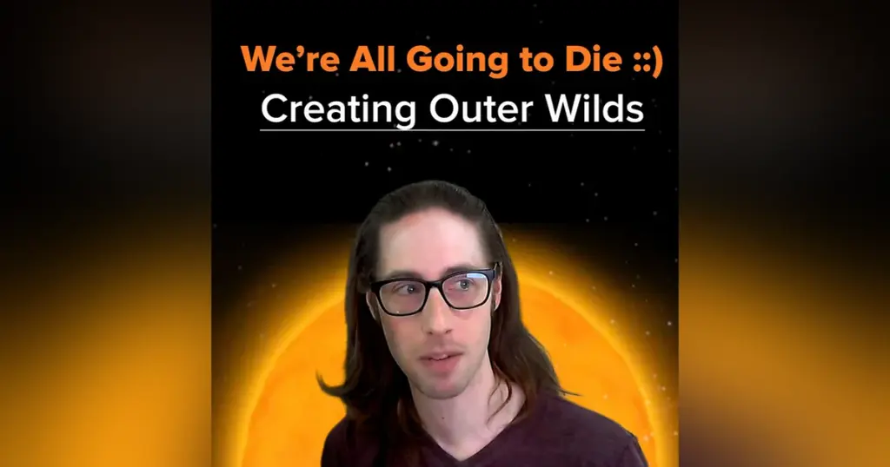

我们终将死去——《星际拓荒》的创作（Alex Beachum 访谈）

节目：The Examined Game
主持人：Steven Lake
嘉宾：Alex Beachum（《星际拓荒》创意总监）
官方页面：We’re All Going to Die - Creating Outer Wilds | Alex Beachum Creative Director
视频：YouTube
说明：译文依据英文自动转录稿整理。保留时间戳与谈话内容，删去不影响含义的机械重复和um/uh，并修正 Alex/Kelsey Beachum、《Outer Wilds》、Loan Verneau 等明显识别错误。
00:00—22:20
00:00 Alex Beachum
你身处一颗小小的行星，坐在篝火旁烤棉花糖，隐约能听见树林里的猫头鹰叫声。然后，远方的太阳爆炸了。
《星际拓荒》的一个主题是：也许这一切并没有什么内在的、预先存在的意义；万事都会结束，你也会死去，事情就是这样。但比起什么都不做，去探索、去学习、去认识别人、和他们交谈，并试着度过一段愉快的时光，难道不是更有意思吗？
00:30 Steven Lake
大家好，我是 Steven Lake，欢迎来到《The Examined Game》。今天我们请到的是《星际拓荒》的创作者 Alex Beachum。我和他交谈时，距离这款不可思议的游戏发行已经过去六年。
刚才那段开场稍微有点沉重，但它实在太好了，不能不用。Alex 是一个极其开朗、乐观、充满好奇心而且非常有趣的人。此前我和他的妹妹、《星际拓荒》的编剧 Kelsey Beachum 有过一次非常精彩的谈话，所以我想把这次访谈作为它的另一面，逐渐拼出这款了不起的游戏背后的完整故事。我真的很爱这款游戏。
我们谈到了 Alex 小时候喜欢的游戏、后来影响《星际拓荒》的作品、他注入游戏里的个人兴趣，以及“情感原型”这个概念——也就是先从一种感受出发，再把作品逐渐搭建起来。《星际拓荒》的诞生过程本身就非常精彩，我觉得今天我们会从 Alex 这里窥见它究竟是怎样发生的。请订阅节目，希望大家喜欢这一期，谢谢。
很高兴 Kelsey 把我介绍给了你——或者说把你介绍给了我。我和她聊得非常愉快。我一直对创作者早期接触游戏的经历很感兴趣：那款游戏未必是他心目中的最佳作品，却让他第一次意识到，“我玩这个东西时，身体或内心发生了某种反应，我还想继续体验它。”
01:45 Alex Beachum
天啊。说到童年游戏，我最先想到的应该是 Windows 3 时代。我们家很早就有了一台家庭电脑，我最初的游戏经历来自那里。我们有《神奇校车》系列。我不知道 Kelsey 有没有和你提过，那是一类点击式的教育游戏。
02:09 Steven Lake
它们像是在“骗”你一边学习、一边享受乐趣，对吧？
02:13 Alex Beachum
对。你可以到处点击。我们当然有《神奇校车探索太阳系》，可以前往不同的行星，再玩一些小型平台关卡。现在回头看，那些关卡挺粗糙的，但每颗星球都有不同的重力。即使当时还是孩子，我也会觉得：“哇，这很酷。”木星那关太难了，重力实在太强。
02:38 Steven Lake
确实很有意思。所以教育游戏也是你不断回望的一部分童年记忆。
02:44 Alex Beachum
对。除了这些，我还在朋友家接触到《星球大战：叛军突击》，后来父母给我买了续作。那是一款轨道射击游戏，我们用摇杆操作，里面还有真人影像表演。
游戏真的很难。我记得自己在第三关反复磨了很久，终于通关时，我挥着拳头在走廊里跑来跑去。我不知道是不是它让我爱上了那种极端困难的游戏，也可能我天生就是这种人，谁知道呢。
03:19 Steven Lake
所以你会被高难度游戏吸引。
03:24 Alex Beachum
不只如此。我很喜欢《UFO 50》，其中一个原因是它让我发现自己的口味比想象中还要广。当然，我还是会遇到不喜欢的东西。不过，如果一种挑战属于“正确的困难”，我确实会喜欢。也有些类型的困难完全吸引不了我，但总体来说，我喜欢游戏稍微反抗我一点，给我一些推动力。
03:53 Steven Lake
我想知道，你是什么时候从玩游戏跨到开始尝试制作东西的？
04:04 Alex Beachum
很有意思，我以前一直以为这种转变发生在本科时期。我最初想同时攻读机械工程，以及密歇根州立大学里最接近电影的专业——一种偏视频制作的“电信”专业。我还得学习电话公司的历史。现在除了“贝尔电话公司”这个名字，以及我对某个年代的行业监管毫无兴趣之外，什么都不记得了。
后来那个专业改成了类似“数字媒体艺术与技术”的名字，又增加了游戏课程。我最终放弃机械工程，决定拍电影；随后又意识到，电子游戏也许才是最适合我的中间地带，它同时包含技术和创作。当时我的生活里发生了很多事，这也是我为什么会转向游戏。
我在密歇根州立大学的最后一年尽量学习游戏设计相关技能，之后申请了南加州大学的硕士项目。现在回头看，我显然很早就对制作游戏有兴趣。可能是因为编程既令人生畏，我又以为自己不会喜欢它；它不像使用摄影机那样直接吸引我。后来真正尝试以后，我才发现：“等等，我也很爱这个。”
不过我不擅长按历史顺序讲故事，总会不断跑题。我们可以把这些故事铺开，然后在它们之间飞来飞去。
小时候，我和 Kelsey 会为彼此制作游戏。我给她做过一个叫《Superkid》的游戏，Superkid 好像是她创造的角色。第一部里，我会扮成敌人在走廊里按照固定模式蹦跳。我不会像捉人游戏那样直接追她，她必须研究我的行动规律，在不被碰到的情况下穿过去。
到了《Superkid 2》，我们使用一种给幼儿玩的乐高积木 Duplo。我用积木搭关卡，她拿着一个小摇杆告诉我角色往哪里移动；她说“嘣”就代表跳跃，然后由我亲手移动角色。它本质上是一款冒险游戏。那时我正在朋友家玩《夺宝奇兵与地狱机器》，也刚开始接触《塞尔达传说》，所以这个游戏差不多就是《夺宝奇兵》加上我当时喜欢的《塞尔达》元素。
里面甚至有明确的平台跳跃规则：向上跳时能跨几格，横向跳时又能跨几格；还可以获得道具、解谜和打 Boss。我把所有关卡都记录在方格纸上。几年前，因为那些方格纸还留着，我用 Unity 重做了几个关卡，作为 Kelsey 的生日礼物。把童年做过的东西重新演成一款真正的电子游戏，是一种有趣又奇怪的体验。
初中时，我还和朋友们摸索过 RPG Maker。现在回头看，我走上这条路一点都不奇怪，只是我们当时也非常沉迷于拍家庭电影。
07:49 Steven Lake
我小时候也非常相似。
07:53 Alex Beachum
我后来主要走向了家庭电影。不过我父亲也给我看过很多 DOS 文字冒险游戏，我会非常投入地钻研。今天有 Twine 之类的许多工具，很容易就能做这种东西。当时我听朋友说可以用 BASIC 编写简单程序，总会惊讶：“等等，原来还能这么做？”
我也用 Flash 做过游戏。基本上，我就是在本科时通过 Flash 学会编程的。因为拍电影，我已经有了 Adobe Creative Suite，于是买了一本教人用 Flash 做游戏的书。我在机械工程专业上过一门编程入门课，当时并没觉得有什么特别；但当你用代码让某个东西出现在屏幕上并移动起来时，一切就突然通了。你会觉得：“天啊，这简直是魔法。”
09:04 Steven Lake
我也很喜欢它，但后来没继续钻研编程，Flash 最终成了我制作动画和电影的工具。我一直沿着电影这条路走下去。电影也很棒，我仍然怀念拿着实体摄影机工作的感觉。
你刚才谈到 Kelsey。游戏是否一直是你们兄妹之间的共同语言？听起来你们关系很好。
09:26 Alex Beachum
我愿意相信是这样。当然，我们也是普通的孩子和兄妹，并非时时刻刻都那么和谐。但我们都玩游戏，也都玩过《神奇校车》。我们会为彼此制作游戏，后来甚至会互相制作虚构的游戏杂志，挺可爱的。
09:50 Steven Lake
你可能已经讲过很多次了，但我想以此为跳板，谈谈后来逐渐变成《星际拓荒》的那些早期尝试。
10:20 Alex Beachum
当然。照理说讲过这么多次，我应该更擅长回顾，但整个过程实在太零散、太碎片化了。
我在南加州大学读的是三年制硕士，前两年上课，最后一年完成毕业项目。第二年有一门“世界构建”课程。我已经不记得作业题目，只记得自己当时正在学 Unity，就想：“如果我做一艘玩家可以亲自走进去、在内部活动、坐进驾驶舱然后起飞的飞船，会怎么样？”
实现这个功能后，我觉得很有意思，于是又制作了一些球形行星，想看看“第一人称、而且规模更大的《超级马力欧银河》”会是什么样子。
那次作业里已经出现了一颗叫“碎空星”的行星。它的卫星会用陨石轰击它，星球会逐渐破碎，不过当时还没有黑洞。另一个场景是弥漫着雾气的小行星带，里面有灯塔、蘑菇、某种《晨风》式的气氛，还有鮟鱇鱼。整体主题其实更接近航海和捕鱼，所以才会有鮟鱇鱼；飞船也是一个摇摇晃晃的怪东西，上面有个大钩子，大概是用来钓鱼的。
下一学期进入毕业项目准备阶段。我开始不停做实验，因为要带着一个团队完成持续一整年的项目，在当时看来非常疯狂。
老师会给出一份题目清单，让我们从中选择。我记得其中一道题大意是：制作某种能唤起“海森堡不确定性原理”的东西。于是我做了一个原型：玩家转头时，树木和一间小木屋会在视线之外移动。那只是一次独立作业，当时我没觉得它和毕业项目有什么关系。
我逐渐倾向于制作太空探索游戏，还做了一些相关原型：先驾驶一枚小模型火箭，让它爆炸，然后再进入真正的飞船——这后来变成了游戏教程；我还做过一枚带视频画面的侦察探头，玩家站在地表，把它扔进一片看不清内部的云雾中。那时我已经隐约触碰到“激发好奇心”的想法，只是还无法用语言概括它。
我做了其他几个实验，但始终找不到焦点。后来同学 Simon Wiscombe 给了我人生中数一数二的重要建议：“为什么不做一个情感原型？先别管系统和机制，只做一个能够捕捉你想唤起的感觉的小原型。”
于是我利用“世界构建”课程里的素材，做了一颗小行星。玩家坐在篝火旁烤棉花糖，听见树林里猫头鹰的叫声；远处的太阳突然爆炸。那次爆炸更像一场烟花，它逐渐膨胀，眼前的行星一颗接一颗炸开，最终冲击波抵达玩家脚下的星球。原型就是这些。
显然，它对游戏最终的基调产生了决定性影响。
14:25 Steven Lake
这正好引出了我想问的问题。我在自己的创作中经常发现，作品最早的版本和最终成品之间明明经历了数年开发、重建、重写、重新剪辑和补拍，但回头查看最初的笔记时，却会惊讶地发现最终作品的本质似乎从一开始就在纸上。
听起来，你当时只是在不断试验和玩耍。你能否确定自己最初想捕捉的究竟是什么？回到“情感原型”这个概念：为什么是鱼？为什么是灯塔？我不是想过度心理分析，只是对这些来源很好奇。
15:18 Alex Beachum
我明白。人们常问这些东西从哪里来，令人失望的答案是：我也不完全知道。虽然过去很久了，但我仍然记得那一年。确实有几件相关的事情。
首先，《黑暗之魂》初代在那一年发行。我玩到它时，反应大概是：“这到底是什么东西？”
15:57 Steven Lake
现在只要聊电子游戏就会提到《黑暗之魂》，几乎已经成了陈词滥调；但语境很重要——你是在它刚刚发行时接触到它的。你当时也在玩《塞尔达传说：御天之剑》。
16:15 Alex Beachum
对。我以前谈过《御天之剑》如何影响《星际拓荒》，游戏的某些部分其实是对它的反应。《黑暗之魂》在当时则让我看见：游戏不必遵守所有惯例。你可以做一些非常疯狂的东西，玩家能够接受的范围或许比想象中大得多。
至于危险感——《星际拓荒》里有篝火，是因为《黑暗之魂》里也有篝火吗？我觉得不是，最多可能有某种潜意识影响。时间上确实对得上，但我家本来就一直很喜欢露营。
当时我还在读一本叫《扭曲的通道》（Warped Passages）的书。这是我第一次以业余爱好者的方式接触粒子物理学。大概正因为如此，当我看到“不确定性原理”那道题时，立刻选中了它。
我着迷于现实仿佛具有许多层次这件事。以前我当然听过原子，但从未系统了解过：我们对世界仍有如此巨大的认知缺口；相对论和量子理论为什么无法融洽结合；依据现有知识，人们又提出了哪些桥接两者的设想。这种未知感深深吸引了我。
我从小就喜欢思考现实的本质以及宏观尺度的问题，例如宇宙大爆炸和黑洞。从童年到现在，黑洞出现在我个人项目里的次数多得数不清。
这些东西当时都在脑中旋转。至于鱼是从哪里来的，我真的不知道。之前和一些西班牙学生通话时，他们也问：“那些鱼到底是从哪里来的？”我的回答是：“你们的猜测和我的一样可靠。”
另外，我当时刚刚开车穿越美国西南部，去过查科峡谷。那里有一幅古老岩画，研究人员判断它描绘的是一次古代超新星爆发。那段经历肯定也留在了我的脑海里。
身处那类古代遗迹时，你会想象曾经住在那里的人，也会感受到此后已经流逝的漫长时间。《星际拓荒》里的挪麦遗迹显然也受到了梅萨维德等地的影响。遗迹已经非常古老了，而岩画中的恒星甚至早在那些人看见它爆炸之前许久就已经毁灭。这给人一种极其深远的历史感。
19:23 Steven Lake
我也问过后来加入项目担任编剧的 Kelsey：太空在基调上可以有很多表现方式，可以是奇想、敬畏，也可以是忧郁。《星际拓荒》似乎同时包含这些，但整体又被某种忧郁吸引——随着探索推进，玩家发现的那些事实也解释了这种气质。
在早期原型阶段，按理说你只是在试验机制。可既然你提到了情感原型，游戏的基调是否已经在有意识或无意识中逐渐成形？
20:19 Alex Beachum
是的。那个情感原型本身就是忧郁。我甚至不想勉强用语言描述它。艺术有趣的地方就在这里：你不必使用语言。你把某个东西做出来，别人自然会感受到它。Kelsey 很擅长语言，我有时也能说得不错，但发挥不太稳定。
那个原型捕捉到了整体基调的一部分。我不知道它究竟来自哪里，只知道其中一些来源与我个人的信念和哲学有关。
我们在天主教家庭中长大，不过并不严格。比如我们会认为《创世记》是一种隐喻，宇宙大爆炸仍然真实发生过；科学与信仰可以共存。但本科时期，我像许多人一样失去了信仰。到研究生早期，我仍在处理它留下的余波。
对我来说，那不是信仰逐渐淡去的小变化，而是一次非常巨大的世界观转变。现在回头看，我很庆幸自己经历了它，但当时真的非常艰难。于是我难免会思考那些重大的存在主义问题：如果原先的答案不成立，那么人生的目的是什么？
不过我绝不是说，自己为了处理这些问题才制作或启动了《星际拓荒》。这些想法只是一直在脑中盘旋。
22:20 Steven Lake
对，创作通常不会是如此直接的一一对应关系。
22:22—40:59
22:22 Alex Beachum
是的，这些想法只是盘旋在周围，而且信仰的变化已经是几年前的事了。
说回太空：在基调上，我们有一个非常明确的目标——把太空表现成一个充满敌意、非常危险的地方。无论是人类、炉边人还是任何类似的生物，本来都不应该待在太空中。可你还是把自己绑进一枚火箭、一只铁皮罐头里，出发去探索和发现。这种感觉非常重要。
视觉、声音和游戏机制的许多选择，都在尝试取得一种平衡。我们并不是要制作《坎巴拉太空计划》，但希望太空在真正重要的层面显得真实。当时几乎没有多少游戏能传达这种体验。我本来就是个太空迷，小时候最喜欢的电影之一是《阿波罗13号》，现在也仍然很喜欢。
我玩过许多太空游戏，也为毕业论文做过研究，却想不到多少作品真正表现了推进器、宇航服里的呼吸声，以及“你移动得极快，身体却感觉不到速度”这些体验。
23:58 Steven Lake
也就是说，它更接近 NASA 的气质，而不是街机、4X 或《精英》式的太空体验。
我们已经说明，不应把你失去信仰的经历和《星际拓荒》强行画成简单的对应关系。不过如果你愿意谈，我很好奇：经历那段旅程以后，你在另一端得到了什么？人的世界观一直在修改和重建，那么你最后走到了哪里？
24:44 Alex Beachum
那更像一次重新整理，而不是把所有东西彻底推翻；主要是重建地基。
即使我成长于非常自由的天主教环境，并不要求逐字逐句相信教义，仍然有一些观念是可以理所当然依赖的：死亡以后还会发生些什么，万事背后存在一个宏大的目的。
当你重新建立自己的世界模型，发现这些部件消失了，就像要在抽走几块以后重新平衡一座叠叠乐，同时不让整座塔倒下。
对我而言，很难不走到这样的判断：世界和人生从根本上并不存在固有意义。那么，我们怎样与这个事实和平相处，又不滑向彻底的虚无主义？彻底的虚无主义在逻辑上或许说得通，但实在太无聊了。
26:18 Steven Lake
你可以拿一个漫长周末来体验虚无主义，但把它当成长久的生活方式就太痛苦了。
26:26 Alex Beachum
是的。我还是不想暗示《星际拓荒》只是我个人处理这些问题的工具，也不想说它的一切都是我完成的。Kelsey 有她自己的理解；参与叙事的每个人都加入了某些东西，因为这个主题对每个人的意义都不同。
我很喜欢看到玩家从宗教角度理解《星际拓荒》的结局，认为它具有精神性。那很好。作品并不是要宣称“什么都不存在”。
我个人从那段经历另一端得到的答案，确实成为《星际拓荒》的一个主题：也许这一切没有内在意义；事物会结束，你会死亡，事情就是如此。但去探索、学习、认识别人、和别人交谈，并尽量度过一段愉快的时光，不是比什么都不做更有意思吗？
即使从无限时间的尺度来看，这些行动最终什么也没有积累；即使宇宙最终热寂，再也不会发生任何事情——了解它仍然值得吗？如果最终不会产生永恒结果，探索和学习还有什么意义？这是我们有意识地放进作品里的主题。
28:09 Steven Lake
你说到探索、学习、认识他人和建立联系时，我想到自己游玩这款游戏的感受。我从未想过“作者希望我怎样思考或感受”，而是自然地把自己的信念投射到了游戏里。
这种行为在好的意义上有些以自我为中心，但艺术本来就容许这样。比如听一首歌时，我会按照自己的处境理解歌词，让它支持自己的叙事；有时游戏、书籍和电影也会反过来挑战人的全部观念。
《星际拓荒》让我以一种可爱、奇异而又艰难的方式，把自己的哲学、信仰和理解放进作品之中。这是它非常特别的能力。
29:29 Alex Beachum
看到别人和自己参与制作的东西建立联系，永远是一件不可思议的事。你不会真正习惯它。
29:39 Steven Lake
多年前，我听过 Bret Easton Ellis 谈《美国精神病人》。他很喜欢读者对小说的热爱，也很喜欢读者对它的理解；但他自己喜爱这本书的原因和读者完全不同，它对他的意义也和对观众的意义不同。
制作纪录片时我也有类似体验：创作者拥有制作作品的经历，观众则拥有接触作品的经历。两者并非完全分离，却始终非常不同。
30:24 Alex Beachum
完全正确。有些部分会重合——当你觉得自己成功传达了某个东西，观众也确实领会了，那非常棒。听到别人得出完全不同的理解也很有意思：“原来作品还可以产生这样的效果，原来有人会从中带走这些东西。”
只要别和我们想表达的内容彻底相反就好。比如有人玩完以后得出结论：“也许我们应该把太阳炸掉。”那就不太对了。
30:52 Steven Lake
我想问的是：一款游戏取得如此巨大的成功后，你会被大量反应包围。作为创作者，你怎样把这些外部反应与自己对作品的感情放在一起？
31:21 Alex Beachum
这问题好大。我试着一小口一小口回答。
我经常好奇，再过二十年，当自己和这款游戏真正拉开很远距离时，会怎样看待它。现在我已经比以前更有距离感了。今天是很久以来我第一次集中谈论《星际拓荒》，这种距离其实挺舒服。是时候逐渐往前走了——当然，我仍然很乐意参加这次访谈。
32:09 Steven Lake
不，我明白你的意思。
32:10 Alex Beachum
如果刚才表达得不清楚：我仍然会为谈论游戏、设计乃至《星际拓荒》感到兴奋。
现在，每当有人告诉我他在游戏中获得了很好的体验，我仍然非常开心。它会偶尔出现，让我突然想到：“天啊，真的有人玩过我们的游戏，而且喜欢它。”我当然知道很多人玩过并喜欢它，但每次意识到这件事，仍然觉得很酷，也有点不知所措。
我期待再过很久以后，自己已经记不清具体细节，然后回头看着它说：“哇，这是我们做的吗？真不错。”
我对这段漫长、复杂的感情没有一个整齐答案，但我显然非常自豪，也很感激我们当时恰好拥有足够的条件、资源和时间，得以完成真正想做的版本。能够实现自己的梦想项目，并在结束时觉得没有把重要东西留在桌上、没有做出严重妥协，是非常罕见的。
33:40 Steven Lake
这确实非常特别。
33:42 Alex Beachum
即使这种机会再也不会出现，至少我们真的成功过一次。太不可思议了。
33:48 Steven Lake
能有一次已经是相当高的命中率了。
我想追问的是：项目早期，你不断制作原型，最早试玩它们的大概是同学；后来作品逐渐发展，开始有人说“我们相信它、相信你、相信这个项目”。你是否知道早期作品里的哪些原则真正抓住了他们，让他们看见其中的特殊之处？
34:39 Alex Beachum
我记得毕业项目那一年，在大家弄明白我们要做什么以前，有一段时间根本没人知道我们到底在做什么。我自己也只知道一点点，还在努力寻找答案。Loan 和我会互相参与对方的毕业项目。
34:57 Steven Lake
虽然不知道它是什么，但你凭直觉知道应该继续？
35:01 Alex Beachum
某种意义上也没别的选择。我已经有了一个团队，我们必须把东西做出来，于是只能继续向前。
真正让我觉得项目终于清晰起来的，是一个受《塞尔达传说：风之杖》启发的想法。我之所以重新思考《风之杖》，是因为自己在玩《御天之剑》时一直不舒服。我问自己：《御天之剑》的什么地方令我烦恼？《风之杖》又为什么对我有效？
我发现，自己很喜欢游戏角色告诉玩家世界中存在某样东西，讲一点与它有关的故事，激起玩家的好奇心，再让玩家亲自去查看。那就是《星际拓荒》叙事设计的骨骼。
意识到可以围绕这一点制作整款游戏后，我第一次比较确信：这里确实存在某种可行的东西。要让它真正成立还有大量工作，但这个核心构想应该能够得到回报。时间循环等许多元素当时已经存在。
我们的毕业项目同时也是高级游戏课程，还有来自南加州大学维特比工程学院的工程学生参与。一次演示后，一位工程教授说：“哦，它有点像《神秘岛》。”我回答：“对，大致如此。”那也是一个重要时刻，因为他终于开始理解，我们也得到了一个有用的描述方式。
36:59 Steven Lake
你还记得他看到的是游戏的哪一部分吗？还是因为年代太久，细节已经消失了？
37:04 Alex Beachum
当时非常早，可能只是展示了“玩家得知一件事，然后据此前往另一个地方”。
说到早期为项目确定方向的因素，我们大致有三个支柱。
第一个是：世界会随着时间发生大规模变化。
那一年出现了另一个关键决定。我们已经有了沙漏双星以及沙子在两颗行星间流动的想法。我问：玩家能不能影响它？玩家能否按下开关，让沙子反向流动？还是沙子只会从一边流向另一边，玩家无权干涉？
现在看起来答案很明显：这是一款时间循环游戏，沙流当然应该自行发生。但当时明确说出“玩家不能影响它，它就是会发生”，成为了一项定义性原则：玩家不能改变超过某种规模的事物。
玩家需要学习如何存在于这个系统中，却不能改变系统。这与时间循环和那些大规模事件的存在理由相互连接，也自然和游戏主题呼应。
第二个支柱是由好奇心驱动的探索，来源就是《风之杖》带来的启发。我们想检验这种结构能否独立支撑游戏，所以决定把其他动机全部拿掉。玩家应该因为好奇而探索，而不是为了资源或升级。任何可能和好奇心争夺玩家注意力的奖励都应该删除。随着开发推进，我们越来越清楚地意识到，叙事是实现这一目标的最好方式。
第三个支柱就是“在太空中露营”：把20世纪60年代的 NASA 与背包旅行和露营结合起来。它听起来不太像一个设计支柱，却确实能统一整款游戏。
后来为 DLC 做概念设计时，我们一度找不到正确气质。最后大家决定把方向拉回来，将它处理成“围绕篝火讲述的鬼故事”。即使听起来很傻，即使只是再次使用木屋元素、换一种做法，也不要紧。
露营式的温暖美学能防止《星际拓荒》变得过于无菌。它在很多方面是一款科幻游戏，但我们不希望它具有那种刻板、冰冷的科幻气质。
39:57 Steven Lake
请再简洁地重复一下三个支柱。
40:01 Alex Beachum
第一，在太空中露营：20世纪60年代 NASA 与背包露营相结合。你正在烤棉花糖，旁边却停着一艘很有阿波罗时代气质的飞船。
这里也包含“太空危险、玩家脆弱”这层感觉，它定义了太空探索的体验。
第二，世界会在玩家无法控制的大规模自然系统作用下，随着时间发生变化。
第三，玩家探索的唯一动机应该是好奇心。因此，我们做的一切都必须激发并回报好奇心。
40:41 Steven Lake
确立这些支柱以后，你们给自己制造了哪些问题？答案大概会是“非常多”。
40:52 Alex Beachum
确实。不过其中一些支柱带来的帮助其实远大于麻烦。
40:59 Steven Lake
它们虽然像限制，却也让许多决定变得清楚。
41:03—54:40
41:03 Alex Beachum
就我个人的创作过程而言，在找到几个固定点以前，我很难知道项目究竟是什么。
41:15 Steven Lake
对。
41:16 Alex Beachum
我把它想成在一块板上钉钉子。钉住几个点以后，就更容易判断还应该加入什么。
问题是，我必须对这些点非常有信心，才能把它们视为固定不动的东西。我必须真心觉得：“对，就是它。”不过一旦拥有几个这样的点，处理其他部分时就可以更加自由。
三个支柱发挥的就是这种作用。它们确实是约束，但当你知道游戏必须由好奇心驱动时，就能直接扔掉大量不相关的东西。玩家不能改变大型系统也是如此。它确实带来问题，我们因为某些机制走得太远、违背了原则而放弃过它们。
但这些原则也让作品拥有结构。现在回头看，很容易忘记开发期间一切有多么不确定。你其实并不知道自己在做什么。因此，拥有几个承重结构——除非发生灾难性的情况，否则绝不改变——会非常有帮助。当然，接下来还得设法解决它们造成的全部问题。
42:33 Steven Lake
这些约束确实制造了挑战，但也像你说的那样，让一大批选项直接消失。你不必再考虑“加入战斗会不会让游戏更好”之类的问题。
42:48 Alex Beachum
没错。战斗从一开始就不会进入你的思考，也不需要反复怀疑这个决定。
这对我尤其有用，因为我是一个非常容易自我怀疑的人。我几乎从不确定，总会拖到最后一刻才作决定。
43:04 Steven Lake
既然你了解自己的创作方式，能够在真正有把握时找到几条关键原则，然后依靠它们继续工作，反而是很好的方法。
43:21 Alex Beachum
关键是找到那些真正牢靠的支点。我们是不是已经完全变成攀岩比喻了？寻找大的抓点，以及可以打入岩钉的位置。
43:29 Steven Lake
好像任何问题都可以用一个不错的攀岩比喻来解释。
说回好奇心驱动的设计：它造成了哪些问题，你们又怎样解决？
43:46 Alex Beachum
老实说，三个支柱中，时间循环以及持续变化的自然系统带来的问题非常机械、非常具体，例如怎样避免浪费玩家时间。
不过时间循环也解决了一些问题。《星际拓荒》的存档系统极其简单：只需要记录玩家的飞船日志里已经有哪些条目，其他一切都会重置。
游戏没有普通意义上的快速存档。好吧，快速存档是可怕的东西，任何游戏都不应该提供——允许玩家暂停、退出，回来后从同一个位置继续，随后删除这份临时存档，那属于正常的便利功能。我可不想被记录成一个喜欢快速存档的人。
44:44 Steven Lake
这期节目的标题有了：“读档作弊者”。
44:48 Alex Beachum
问题是，只要游戏给我机会，我就忍不住反复读档。我玩每一款拉瑞安游戏都会一路读档作弊。
这也是为什么在很长一段开发时间里，我们默认向玩家提供“冥想到下一次循环”的选项——也就是后来从 Gabbro 那里学会的能力。时间循环游戏允许玩家主动跳到下一次循环，听起来很合理。
可是测试发现，玩家只要稍微陷入不利处境，就会说“算了，重置”。这样会错过很多有趣的涌现行为：如果他们没有放弃，而是试着逃出困境，原本可能发生什么？
所以我们移除了默认的冥想功能，后来又以一种比较隐蔽的方式放了回来。它或许藏得有点太深，但它没有默认解锁是有原因的——我们确实测试过另一种做法。
45:51 Steven Lake
我们刚才谈到由好奇心驱动的探索，这也让我想到 Kelsey 的加入。世界里已经有许多精彩的机械系统在运行，而她作为编剧所做的工作，应该是推动玩家继续前进的另一个重要元素。
46:14 Alex Beachum
绝对如此。她大概是在毕业项目第一学期加入的。我们最早合作的部分是村庄。
第一版村庄做得很差——不是 Kelsey 的问题，而是所有村民都在挖苦玩家：“你为什么会想去太空？”Kelsey 指出，如果周围每个人都在劝你别去太空，你最后真的会不想去。
我们错误地期待玩家在熟悉这个世界以前就对它产生好奇。玩家要对远方的某样东西感兴趣，首先必须理解自己所在的地方，甚至对它产生一点熟悉后的无聊感。
最初我们觉得，玩家理应关心村庄另一边坠落的物体。但对玩家而言，整个宇宙都是第一次见到的，处处都有外星人和疯狂景象，那件坠落物并不会天然显得重要。这是一个很初级的错误，但想通以后就很合理。
于是我们重写了整个开场：你是太空计划最新的成员，今天是发射日；你要穿过村庄、参观博物馆并取得发射密码。这套结构非常有效，也为后面的版本打下了基础。
故事在游戏中极其重要。在确定“发现的事物会把玩家引向其他事物”之后，我们设计了一个粗略结构：游戏中存在四个主要的“大谜团”，每一个都回答有关世界的重大问题；玩家要找到三条关键线索，才有能力接近它们。最终游戏比这个结构复杂得多，但归根结底仍然相似。
接着我们必须决定游戏结局是什么。根据我留下的笔记，它来自某个深夜，我和班上一位朋友的谈话。笔记读起来像我们当时嗑了药，但其实完全没有。宇宙之眼，以及“比宇宙本身更加古老的东西”，就是在那次谈话中出现的。
48:40 Steven Lake
人们看到离奇创意时常说“你们想出这个时一定嗑了药”，但这种说法多少会贬低清醒创作本身。人在完全清醒时，往往能够走得更深。
48:56 Alex Beachum
百分之百同意。如果整款游戏都是为了探索并回答问题，那么结局就必须对应最大的问题：最大的问题究竟是什么？
于是我们想到：存在某种比宇宙更加古老的东西。那意味着什么？在我与朋友 Jason 和 Loan 的讨论中，它逐渐变成了某种能够重新启动宇宙的事物。
最初，玩家好像需要把两件东西组合起来；后来我意识到，量子现象更合理。它已经是游戏中最怪异的东西，我们不可能再创造一个比它更怪的系统，所以结局基本只能与它有关。
我们有了一个粗略方向，开始设计古代种族乘坐逃生舱抵达这里的历史。随后与 Kelsey 合作，她在叙事发展中发挥了巨大作用。
在 Mobius，甚至早在学生时期，我们的故事工作就像一个小型编剧室。我、Loan 和 Kelsey 会共同讨论，也会用文档规划信息路线：玩家应该在哪里得知某件事？怎样把它传达出去？Kelsey 创造并追踪大量人物以及他们各自的性格；所有人共同确定世界构建和历史。
整个过程非常缓慢、自然、有机。因此我很难把它讲成“先做了甲，再做了乙”的清楚故事。回头解释创作本身具有一种悖论：人们试图为本来就非常混乱的过程建立秩序。
这并不是说创作没有原因或过程，只是人们倾向于寻找整洁的解释，而事实更像一团混乱的漩涡。你让许多想法长时间在脑中旋转，它们开始以有趣的方式凝结。然后一个记忆比我好的人会说：“记得两年前我们谈过这个吗？”我才会回答：“现在记起来了。这个想法很好，如果再把它和另一个东西连起来呢？”这种交叉授粉非常有意思。
51:26 Steven Lake
你与这款游戏共同度过了很多年。从开始到完成，你本人也一定经历了成长和变化。这样一项长期陪伴你、不断被扩展和迭代的工作，对你的人生而言是件好事吗？
52:05 Alex Beachum
绝对是。一个重要原因是，我有机会和非常出色的团队合作。
当时我在微软短暂工作了大约七个月，Loan 打电话问我要不要回 Mobius 和他们一起做一些移动游戏；随后游戏在独立游戏节获奖，许多条件仿佛恰好排列到了一起。
开发当然有起伏，并不是一帆风顺；它压力很大，也有些糟糕部分我宁愿不要再经历。但总体而言，我在制作过程中一直很开心，那是一段非常酷的经历。项目持续了很久，可我从未真正厌倦，也没有因为它而彻底耗尽。
游戏成功并受到喜爱，当然会反过来影响我对那段经历的感情。不过，制作东西时获得的满足和快乐，与把作品放进世界、看到人们回应它时获得的满足，是两种相当独立的东西。
有些作品我不享受制作，却很喜欢它得到的反响；也有些作品制作过程很快乐，外部结果则未必如此。两者是完全不同的味道，尽管其中一种体验确实会回过头改变另一种。无论如何，我对《星际拓荒》的开发留有很多美好记忆。
54:40 Alex Beachum
说到作品发行后的感受——我们生活在这样的时代，真的非常幸运。
想象一下，在20世纪80或90年代制作游戏：投入无数精力，最终发行；你或许认识一两个玩过它的人，或偶尔读到一些评论，但无法上网，没有 Twitch，也不能亲眼看见别人游玩、反应并经历你的作品。
今天能够做到这些，实在太酷了。电影创作者可以在放映时和观众待在同一个空间，游戏没有完全相同的时刻，但观看主播游玩大概是最接近的体验。
55:39—1:07:21
55:39 Steven Lake
对我而言，最接近“与别人一起享受自己的作品”的体验就是坐在电影院里。有趣的是，每个影院的气氛都不相同。观众会变成一种集体意识：根据整场观众的整体情绪，同一个笑点可能格外好笑；有些场次则几乎得不到任何反应。
那是我最能感到自己与观众相连的时刻。对你来说，最接近“享受别人正在享受你的作品”的体验是什么？你刚才提到了直播。
56:28 Alex Beachum
《星际拓荒》刚发行时，我们观看直播有一半还是为了寻找漏洞和需要修补的问题，所以它仍然属于工作。
但我真的很喜欢看直播。Loan 和我观看别人游玩《星际拓荒》的时间，大概比世界上绝大多数人都长——如果有人看得比我们还多，求你出去走走吧。
试玩测试不一样，因为试玩者知道开发者就在旁边。直播虽然也不像电影院，不过有聊天室和观众之间的互动。我很喜欢看玩家面对重大揭示时的反应，尤其喜欢确认那些设计真的奏效。
看到玩家产生情绪也很触动人。我并不是每天躲在互联网上到处寻找“我们有没有把谁弄哭”，但看到有人以那样强烈的方式回应作品，确实非常感人。我们竟然有技术让创作者亲眼看到这一切，实在很酷。
57:53 Steven Lake
我们终于拥有了让人哭出来的技术——当然，它还能做很多别的事。
58:08 Alex Beachum
能够唤起真实反应是一件很特别的事。
我也喜欢看 Reddit 上的玩家建立理论、彼此争论。尤其在 DLC 中，有些玩家会对核心问题站到完全不同的立场。那是我们没有预料到的，也因此非常有意思。看到这类自然产生的讨论很棒。
我还喜欢听到有人和伴侣一起玩，或者和自己的孩子一起玩。有时我会看见某个人露出与 Kelsey 完全一样的表情——我们兄妹大概确实有许多相同的神态。
《星际拓荒》的玩家社区也非常友善。我不知道这是怎样形成的，但它真的很好。大家非常注意避免剧透，会保护其他人的主观体验，而且大多数时候不会做得太过强硬。看到一个社区如此在意陌生人的首次体验，真的很酷。
59:45 Steven Lake
可能正是因为那些发现和恍然大悟的时刻非常有感染力。玩家会慷慨地想：“我希望你也能亲自经历它。”当然，其中可能也带着一点“我需要另一个终于可以和我讨论这件事的人”。
他们既盼着朋友快点发现，又努力克制自己。看直播时，聊天室里的老玩家有时就像第一次参与游戏试玩的开发者，拼命想喊：“不，求你了，就做那件事！”
1:00:47 Alex Beachum
有时候你真想把控制器抢过来：“求你了，飞进太空吧。往左转十度，只要看一眼左边，我什么都愿意给你。”但你当然不能这样做。
做开发工作久了，你会学会忍耐，可看着仍然很痛苦。那些玩家也不愿剧透朋友，只能在一旁受折磨。看到这种反应时，你会想：“对，现在你终于明白了。欢迎加入我们。”
1:01:16 Steven Lake
那么接下来呢？如果有些事情可以公开，你现在想继续迭代、构建或完成什么？最近在忙什么？
1:01:36 Alex Beachum
工作室正在制作一款新游戏。我想这件事应该可以公开：我不是它的总监。
1:01:43 Alex Beachum
不过我参与了项目，负责设计以及其他各种工作。因为不用担任总监，我有时间回头处理一些非常古老的个人项目。
其中包括一部我和 Kelsey 合作的电影。就不说我们究竟做了多久吧，只能说它开始于本科时期，老到甚至不是高清画面。这是个有点傻气的个人项目，但我觉得如果能把它完成会很好。
我也在思考其他游戏点子。已经过去了几年，我开始再次产生自己主导创作的冲动。
我有太多想做的东西。尽管《星际拓荒》的主题是接受终结，我还是会想：“不，我希望自己能多活几辈子，好把更多想法做出来。”随着年龄增长，你会意识到必须在想法和项目之间做出选择。但如果太执着于计算“哪个才最值得”，反而会停滞不前。还是得享受过程，做眼下真正吸引自己的东西。
1:03:05 Steven Lake
这个观点很有意思。人确实会在脑中计算自己还可以完成多少事情。不过我也应该说明：你刚才说的个人项目，不代表你正在公开预告 Mobius 的下一部大作。
1:03:22 Alex Beachum
没错。除了 Mobius 正在制作的下一款游戏，这些东西大概不会引起多少人的关注，它们主要是我在玩耍。
比如两年前，我为了 Kelsey 的生日，用 Unity 重做了童年时那款 Duplo 积木游戏。最近我又陷进去了。我不断问自己：“我为什么还在做这个？谁会玩？这只是一次编程练习吗？”可它就是有什么东西一直吸引着我。我总觉得，也许能用它做点什么，也许可以让它变得非常古怪。
我已经有了一些想法，不过我们走着瞧。它肯定不会成为“下一部大作”，只是一个为了乐趣而做的小东西。
1:04:07 Steven Lake
这听起来是个很舒服的位置。我很喜欢反复试验和玩耍的过程：各种东西先漂浮在周围，某个想法逐渐积累到足够的质量，突然落到桌面上，让我意识到：“好，现在我要开始正式制作它了。”
1:04:29 Alex Beachum
完全是这样。我花了可笑的漫长时间才意识到，自己玩得开心时才能做出最好的工作。
作品本身不必轻松愉快，它完全可以处理严肃主题。但如果思考和制作它的过程没有乐趣，工作就会变得像拔牙一样痛苦。
当然，说起来容易，做起来很难。尤其当创作成为职业时，你不可能每天只做自己最感兴趣的东西。我绝对是世界上最没资格抱怨创意工作的人之一，我实在太幸运了，但其中仍然存在平衡。
有些日子，你必须相信只要给想法一些空间，它最终会自己出现；另一些日子，你必须告诉自己：“不，今天就是得继续往前推。”只要不断把东西扔到墙上，总会有一个能粘住。两种方式都需要。
1:05:25 Steven Lake
最后一个问题。非常感谢你抽出时间，我特别喜欢这次谈话。
你制作东西时，即使只是一次测试或玩耍，主要动力是想看看自己能组合出什么，还是会不断考虑未来的玩家？我不一定指广泛的大众，也可能只是 Kelsey 或某位朋友。
不同创作者对这件事的态度不同。有人主要为了取悦自己，有人则为了取悦另一个人——这当然是一种过度简化，不过希望你明白我的意思。
1:06:11 Alex Beachum
这是个很有意思的问题。我想，我确实需要作品存在一个观众。
除非只是为了验证“某件事在技术上能不能做到”的实验性原型，否则我大概不会制作一款永远只有自己能看见的游戏。纯实验可以只满足我自己：“好吧，让我们看看会发生什么。”但真正的作品，我一定会想到别人。
这也是我喜欢电影和各种艺术媒介、以前想成为电影人的原因。你制作一样东西，把它分享出去，然后看看别人会获得怎样的体验。归根结底，你是在给另一个人创造一次体验。
我也不知道自己为什么如此喜欢这件事，这里可能不适合深入分析。不过显然我并不孤单，很多创作者都被同样的动力推动。
通常会有某个想法在我脑中不断碰撞。我最终做出来的东西，在某种程度上一定是我自己会喜欢玩的东西。
1:07:20 Steven Lake
对。
1:07:21 Alex Beachum
就像我在为另一个平行宇宙中的自己制作游戏：那个我对作品一无所知，可以第一次接触它。
当然，这个人实际上不存在。但我相信，世界上总有一些人的口味与我重合得足够多，他们也会喜欢它。
English Transcript（英文转录）
The official episode page includes the complete automatically generated English transcript. You can read it alongside the Chinese edition above: